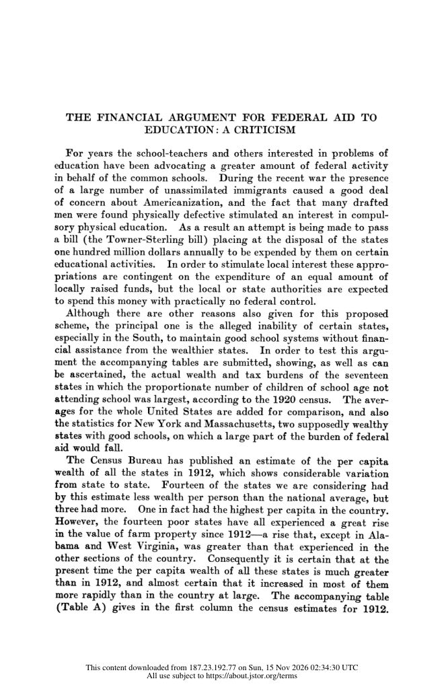

Seager, os sindicatos de empresa, a tarifa de 1922 e a Europa
Leitura: 23 min
Seager compara sindicatos de empresa e de ofício; Berglund mede a tarifa de 1922; Tucker contesta a pobreza dos estados do Sul; Moulton, Anderson, Bruère e Fisher discutem a Europa e os empréstimos.


Entre agosto de 1919 e fevereiro de 1922, segundo o levantamento do National Industrial Conference Board citado por Henry R. Seager, o número de conselhos de fábrica nos Estados Unidos passou de 225 para 725. Nos dois anos de 1920 a 1922, a filiação à American Federation of Labor caiu mais de 800 mil membros, ou mais de 20%. É com esse contraste que abre o número de março de 1923 da American Economic Review, o primeiro do volume XIII: o discurso presidencial de Seager, da Columbia University, lido na reunião anual da associação em Chicago, em 27 de dezembro de 1922.
O restante do número trata de política pública vista pelas contas. Abraham Berglund, da University of Virginia, descreve a lei tarifária de 1922, que devolveu as alíquotas americanas ao nível da lei de 1909 e, em vários produtos, as levou mais alto. Rufus S. Tucker, da Harvard University, testa com estatísticas de renda, patrimônio tributável e gasto escolar o argumento financeiro a favor da ajuda federal à educação. E Benjamin M. Anderson Jr., do Chase National Bank, resume a intervenção que fez na reunião de Chicago sobre a situação financeira da Europa e os remédios possíveis. Com ele, H. G. Moulton e Henry Bruère formam a sessão sobre problemas financeiros externos, comentada por Irving Fisher; S. S. Garrett escreve sobre moeda e preços e E. A. Goldenweiser, de Washington, sobre as importações de ouro. Completam o número quinze resenhas de livros, as listas de livros novos, os resumos de artigos de periódicos, a lista de documentos oficiais e as notas.
Sindicato de empresa ou sindicato de ofício?
Henry R. Seager (Columbia University) · “Company Unions vs. Trade Unions” · pp. 1–13
Seager restringe a pergunta às indústrias de serviço público, cuja operação contínua é vital para o interesse público, como bondes e ferrovias, e compara as duas formas de organização do ponto de vista do público, dos empregados e dos empregadores. O pano de fundo é a legislação ferroviária: a lei Erdman, de 1898, apostou em mediação e arbitragem voluntária; a lei Newlands, de 1913, refinou esse mecanismo; a lei Adamson, de 1916, fixou por lei a jornada-padrão; e a Transportation Act, de 1920, criou o Railroad Labor Board, com sete critérios para salários justos e razoáveis. O Kansas foi além, com um tribunal industrial que proibia greves.
Para o autor, essa trajetória tende a se firmar, por duas razões. A greve nessas indústrias se volta contra quem a faz, porque a opinião pública condena de antemão quem interrompe o serviço. E o poder público, que já regula tarifas e qualidade, não pode exigir tarifas razoáveis sem exigir também custos razoáveis, inclusive os salários.
“A arma da greve nessas indústrias começa a ser um bumerangue.” (“the strike weapon in these industries is beginning to be a boomerang”)
No balanço, o sindicato de empresa leva vantagem em economia, eficiência e continuidade da operação: restrito aos empregados de uma só organização, conhece os problemas de produção e tende à cooperação. O sindicato de ofício leva vantagem em salários, jornada e condições de trabalho: seus dirigentes não dependem do empregador, conhecem as condições do setor no país inteiro e contam com o apoio dos demais membros. O excesso de luta, acrescenta, pode custar caro aos próprios trabalhadores, como nos ofícios da construção em Nova York e Chicago.
Quando a lei fixa padrões, cria tribunais e restringe a greve, as vantagens do sindicato de ofício ficam em boa parte neutralizadas. A escolha sobre qual forma prepara melhor o trabalhador e o cidadão, conclui o autor, depende do tipo de empregador: enquanto predominar o empregador explorador, movido só pelo lucro, a preferência deve ser pelo sindicato de luta; com o empregador cooperativo, cresce o campo do sindicato de empresa. A solidariedade dos assalariados, prevê, passará em parte do campo industrial para o político.
Até onde subiu a tarifa de 1922?
Abraham Berglund (University of Virginia) · “The Tariff Act of 1922” · pp. 14–33
Berglund situa a lei, sancionada no fim de setembro de 1922 depois de cerca de vinte meses de preparo, numa história tarifária de três períodos: tarifas sobretudo de receita até 1816, proteção moderada até a Guerra Civil e proteção alta depois dela. A lei de 1913 marcara uma volta à moderação; a reação do pós-guerra, alimentada pelo medo da queda de preços e salários diante de mais importações, recolocou a de 1922 na linha das leis de 1890, 1897 e 1909. O Congresso tomou a lei de 1909 como base e, em muitos casos, repetiu suas alíquotas.
A média das tarifas efetivamente cobradas ignora as alíquotas proibitivas, que não geram importação, e, quando inclui a lista de isentos, mistura produtos como o café. Foi assim que o senador Watson, de Indiana, pôde argumentar que a média do projeto seria de 13,36%, contra 11,44% nas importações de 1921. Para Berglund, o caráter da lei se vê melhor pelo que foi feito item a item.
O ferro e o aço, que cresceram sob proteção e se tornaram exportadores, ficaram quase indiferentes às próprias tarifas. As grandes altas vieram em produtos de indústrias surgidas na guerra, em bens agrícolas cujos preços caíram depois do armistício e em manufaturas em que o trabalho pesa muito no custo. O capital da indústria de corantes de alcatrão passou de US$ 3 milhões para US$ 174 milhões durante a guerra, e as novas alíquotas, calculadas sobre o valor americano, equivaliam na prática a um embargo. Nos minérios e ligas usados no aço, que o autor considera as alíquotas menos defensáveis da lei, o imposto sobre o tungstênio, de 45 centavos por libra do metal contido, equivalia a algo entre cerca de 100% e mais de 220% ad valorem aos preços de tempo de paz.
A lei, conclui Berglund, resulta mais de interesses seccionais do que de uma política nacional, com o Oeste produtor de matérias-primas de um lado e o Leste industrial do outro. Essa tensão ajudou a criar a tarifa flexível, que permite ao presidente mudar alíquotas em até 50%, com base em investigações da Tariff Commission sobre diferenças de custo de produção.
Os estados pobres precisam de ajuda federal para as escolas?
Rufus S. Tucker (Harvard University) · “The Financial Argument for Federal Aid to Education: A Criticism” · pp. 34–47
O alvo é o projeto Towner-Sterling, que poria à disposição dos estados US$ 100 milhões por ano para atividades educacionais, condicionados a igual gasto local. Tucker lembra que a guerra estimulara essas propostas: a presença de grande número de imigrantes não assimilados causou, escreve, bastante preocupação com a americanização, e muitos convocados foram considerados fisicamente defeituosos. Entre as razões apresentadas, a principal, diz Tucker, é a suposta incapacidade de alguns estados, sobretudo do Sul, de manter boas escolas sem ajuda dos mais ricos. Para testá-la, o autor reúne dados dos dezessete estados com maior proporção de crianças em idade escolar fora da escola segundo o censo de 1920, além de Nova York e Massachusetts, sobre os quais recairia boa parte do custo.
Com dados do Census Bureau, do National Bureau of Economic Research e do Bureau of Education, o autor conclui que a maioria desses estados tributava menos do que podia e menos do que os demais, tanto para as escolas quanto para o governo em geral. Nas cidades de mais de 30 mil habitantes, a média nacional do imposto geral sobre a propriedade passava de US$ 21 por mil dólares de valor real; em Charlotte, era de US$ 8,39.
Tucker sustenta ainda que os números oficiais favorecem esses estados. A reavaliação da Carolina do Norte mostrou que a estimativa do censo não passava de 75% do valor real, e comparações com ela sugerem subavaliação semelhante em outros. A renda calculada a partir do imposto de renda também estaria subestimada: em vários desses estados havia menos declarações na faixa de US$ 1.000 a US$ 2.000 do que na de US$ 2.000 a US$ 3.000. Parte disso, diz, se explica pela isenção de US$ 2.000 para chefes de família, mais US$ 200 por dependente, pela proporção comparativamente grande de casados no Sul e por famílias maiores que a média.
A conclusão é que a ajuda federal não se justifica pela pobreza. O remédio, para o autor, está nos próprios estados: revisão da avaliação e da tributação, leis de frequência escolar mais rigorosas e controle estadual dos conselhos escolares de condado.
“Se os subsídios federais se justificam, é apenas por uniformidade de política e controle central.” (“If federal subsidies are justifiable it is only on the ground of uniformity of policy and central control”)
A economia europeia pode se recuperar à parte das finanças?
H. G. Moulton (Institute of Economics, Washington, D. C.) · “Economic Conditions in Europe” · pp. 48–64
Pediram a H. G. Moulton, do Institute of Economics, de Washington, que tratasse das condições econômicas “fundamentais” da Europa, separadas dos fatores financeiros, tidos como menos importantes. Ele começa pela produção e encontra contrastes. Na Alemanha, a produção se manteve bem até meses recentes e o desemprego efetivo foi muito baixo em boa parte de 1922. A Tchecoslováquia vivia grave crise industrial, a França ia relativamente bem e a Grã-Bretanha quase não saíra da depressão de 1921. O paradoxo, observa o autor, é que Inglaterra e Tchecoslováquia, os dois países que seguiram o conselho dos especialistas e tinham finanças mais sólidas, estavam na pior situação econômica.
Os fatores clássicos de produção, terra, trabalho, bens de capital e gestão, estão para Moulton substancialmente intactos; há até excedente de mão de obra. A análise, porém, omite o que ele chama de fatores conjunturais, os que dizem respeito não à empresa isolada, mas ao sistema econômico em que ela opera. A França reconstruiu as áreas devastadas com déficits anuais de 25 a 30 bilhões de francos; a Alemanha sustentou a produção com subsídios e inflação, até que nenhum empresário soubesse se tinha lucro. Das quatro saídas que o autor examina para o marco, inflação indefinida, colapso, deflação e estabilização, só a última é viável, e ela exige orçamento equilibrado e fim das emissões.
Pelas contas do autor, os gastos domésticos franceses chegariam em 1925 a cerca de 34 bilhões de francos, 18 deles em juros da dívida interna, enquanto a receita tributária nunca alcançara 20 bilhões. Há ainda as rupturas do sistema internacional: a Alemanha, que antes da guerra mandava cerca de 24% das exportações para a Rússia, a Finlândia e a Polônia ocidental, a Áustria-Hungria, os Bálcãs e a Turquia, perdeu esses mercados e fornecedores próximos; se o industrialismo alemão desabasse, diz o autor, a fome ou a emigração seriam as únicas alternativas para alguns milhões de pessoas.
A conclusão é que 1923, sem reformas políticas e econômicas significativas, será consideravelmente pior que 1922, com o foco do problema na Alemanha. Moulton insiste em três relações: a economia está entrelaçada com as finanças públicas e privadas, nenhum país europeu se recupera sozinho e tudo depende da política.
Como pôr as finanças da Europa de pé?
Benjamin M. Anderson, Jr. (Chase National Bank, New York City) · “The European Financial Situation and Possible Remedies” · pp. 65–67
Anderson falou sem anotações na reunião anual de Chicago, em 29 de dezembro de 1922, e a Review publica o resumo que ele próprio preparou. A tese é que qualquer solução de fundo para a Europa exige reformas drásticas no próprio continente, em cinco frentes. Nas finanças públicas, impostos muito maiores e gastos muito menores, a ponto de a receita corrente permitir amortizar dívida, e consolidação da dívida flutuante em títulos de longo prazo. Na moeda, retorno rápido à conversibilidade em ouro: a Grã-Bretanha deveria buscar a paridade antiga, mas a maior parte dos beligerantes do continente faria melhor com paridades novas e muito mais baixas, porque restaurar as antigas pesaria demais sobre as dívidas públicas e os preços. Nas reparações alemãs, um acordo baseado na análise da capacidade de pagamento da Alemanha. No comércio, barreiras menores, sobretudo entre os pequenos estados do Leste europeu, e mudança da própria política tarifária americana. Na indústria, capital de fora, que viria se as reformas fossem feitas.
“O papel-moeda flutuante é o maior obstáculo isolado ao progresso industrial na Europa.” (“Fluctuating paper money is the most serious single impediment to industrial progress in Europe.”)
Os ministros das finanças, diz Anderson, conhecem essas necessidades, mas dependem de maiorias parlamentares temporárias diante das pressões por pensões, reconstrução, subsídios ao pão e ao desemprego e gastos militares. A proposta é um pacto: os governos da Grã-Bretanha e dos Estados Unidos reduziriam muito ou até cancelariam as dívidas dos aliados continentais, e banqueiros americanos, britânicos e japoneses se empenhariam em colocar novos títulos europeus junto a seus investidores. Em troca, a Europa faria as reformas, e os credores supervisionariam o uso dos recursos, sem exigir que fossem gastos no país que empresta.
O autor descarta esquemas de estabilização cambial que não ataquem as causas. Sustentar o câmbio com empréstimos americanos, como se fez na guerra e nos cinco meses seguintes, estimulou, depois da guerra, gastos europeus em produtos americanos e atrapalhou a recuperação das exportações da Europa. Um banco internacional de câmbio ou uma câmara de compensação seriam, a seu ver, o mesmo mecanismo sob outra forma. Parte dos novos empréstimos, porém, poderia vir em ouro, para reforçar as reservas dos bancos emissores e facilitar a volta à conversibilidade.
Como emprestar à América Latina sem recorrer à força?
Henry Bruère · “Constructive Versus Dollar Diplomacy” · pp. 68–76
Henry Bruère leu o trabalho na reunião de Chicago, em 29 de dezembro de 1922, e limita o tema às relações financeiras dos Estados Unidos com países latino-americanos que dependem de capital externo. A diferença entre os dois termos do título, diz ele, é de ênfase. A diplomacia do dólar tomava os investimentos no exterior como base da política e acionava o poder coercitivo americano quando o devedor deixava de cumprir suas obrigações. A diplomacia construtiva dispensa a força e a substitui pela supervisão dos termos e condições dos empréstimos antes que eles sejam feitos. O autor ressalva Haiti, Santo Domingo e Cuba, onde a igualdade legal entre Estados fora abolida: essas repúblicas, escreve, são antes experimentos sociológicos do que Estados, e estão onde estão por sua própria má administração.
Antes da guerra, lembra o autor, a participação americana nas finanças da região era secundária à da Inglaterra, da França e da Bélgica. Desde março de 1922, o Departamento de Estado pedia que os bancos lhe submetessem os planos de empréstimos externos, sem opinar sobre o mérito comercial nem assumir responsabilidade; Bruère presume que nenhuma emissão importante seria feita sem essa consulta.
Dois casos ilustram o argumento. O primeiro é um contrato nunca executado, que dava ao banqueiro todas as receitas do país como garantia e o controle de um banco nacional, agente fiscal único e isento de impostos; para o autor, nenhum banco deveria assumir tamanha responsabilidade fiscal. O segundo é o acordo provisório da dívida mexicana, que distribuía os juros atrasados por quarenta anos a partir de 1928 e que, a seu ver, deveria ter incluído um programa de reforma agrária executado com as ferrovias.
Daí as propostas: desestimular que interesses financeiros americanos assumam funções de governo, recusar monopólios como condição de empréstimo, numa versão da Doutrina Monroe dirigida aos próprios Estados Unidos, limitar o endividamento em proporção às receitas, exigir a declaração do uso dos recursos e tornar públicos o custo total e todas as cláusulas. O teste final, conclui, é se o empréstimo desenvolve a independência fiscal e econômica do país tomador.
Por que a Europa afunda se a capacidade produtiva está intacta?
Irving Fisher (Yale University) · “Stabilization of Europe” · pp. 76–80
Irving Fisher, de Yale, comentou na sessão noturna de 29 de dezembro de 1922 os três trabalhos agrupados sob o título “Foreign Financial Problems”. Parte do interesse americano: a Europa é mercado e devedora, deve aos Estados Unidos onze bilhões oficialmente e quatro bilhões por outras vias, e precisa estar de pé para comprar trigo e pagar. O melhor método, em sua opinião, é a entrada dos Estados Unidos na Liga das Nações, que permitiria agir como árbitro imparcial e dar à França segurança contra nova invasão.
Uma investigação americana imparcial deveria medir a capacidade de pagamento da Alemanha e propor um calendário de reparações. Fisher espera, a título provisório, que pouco ou nada possa ser pago por muitos anos e que os Estados Unidos continuem emprestando pelos canais normais de investimento.
O paradoxo, diz ele, é que a capacidade produtiva europeia, como enfatizara Moulton, é quase tão adequada quanto antes da guerra, e a área devastada é menos de 1% do continente; ainda assim a Europa afunda. A explicação é o desajuste. O custo da guerra já foi pago quando os projéteis explodiram; as dívidas são só a obrigação de transferir dinheiro dos contribuintes aos portadores de títulos. Mesmo quando credor e devedor são a mesma pessoa, a transferência emperra, e o governo, sem conseguir cobrar o imposto, recorre à impressão de moeda.
Com exceção da Inglaterra, os governos devedores estão, na prática, insolventes, e a emissão de moeda cria um círculo vicioso de incerteza, menos produção e menos receita. Fisher aponta dois meios de aliviar a dívida sem mudar o principal: moratórias sem juros e juros baixos, como dez anos de moratória, depois 3% numa segunda década e então um fundo de amortização de 2%. Cita como precedente a Áustria, socorrida pela Liga das Nações, e compara a falta de incentivo da Alemanha à dos arrendatários irlandeses do tempo de Gladstone. A conclusão encadeia três chaves: o comércio e os créditos americanos dependem da reabilitação da Europa, esta depende da intervenção dos Estados Unidos, e a intervenção depende de ocupar a cadeira vazia na Liga.
A quantidade de moeda determina os preços?
S. S. Garrett · “Some Notes on the Relation of Money and Prices” · pp. 81–83
S. S. Garrett parte de um ponto de acordo e de uma divergência. Quase todos os economistas admitem alguma relação entre a quantidade de moeda e o nível de preços; os defensores extremos da teoria quantitativa a veem como proporcional e causal, com a moeda como causa. Os críticos respondem que as estatísticas mostram o crédito bancário acompanhando, e não antecedendo, os preços no atacado, e que a forte queda de preços de 1920 já estava em curso antes de qualquer contração do crédito.
A análise do mecanismo, sustenta o autor, mostra que os quantitativistas estão mais perto da verdade. As variações começam nos preços por atacado, que respondem depressa ao volume de encomendas recebidas pelos produtores; salários e preços no varejo vêm depois. Como os pagamentos dependem de compromissos assumidos quando as encomendas foram feitas, é de esperar que os preços se movam primeiro e o poder de compra nominal, moeda fora dos bancos mais depósitos à vista, venha em seguida. A expansão de depósitos após a queda de 1920, longa demais para ser explicada assim, decorre de outro fator: na crise, o poder de compra é usado com cautela e a velocidade de circulação cai.
A questão interessa por causa do plano de Irving Fisher de estabilizar preços variando o conteúdo de ouro do dólar. Para Garrett, o plano poderia limitar as cristas da curva de preços, mas seria quase inoperante nas depressões: mudar o ouro do dólar altera apenas o tamanho nominal da estrutura de crédito, e a capacidade de empréstimo dos bancos só limita os preços quando está toda em uso, no auge do ciclo. Os juros, a seu ver, têm papel menor na demanda por empréstimos, e o comércio exterior é pequeno demais diante do comércio interno para corrigir os preços.
O plano, conclui, poderia eliminar as marés longas de preços causadas por mudanças na oferta e na demanda de ouro, o que não é pouco, mas não as oscilações curtas do ciclo industrial. Essas não se controlam só com a oferta de moeda. A proposta do autor é variar, em sentido inverso ao volume de negócios privados, o ritmo dos gastos em obras públicas e nos serviços públicos sobre os quais o governo tem algum controle, como ferrovias, bondes e companhias de energia.
O que acontece com o crédito se o ouro continuar chegando?
E. A. Goldenweiser (Washington, D. C.) · “Effects of Further Gold Imports on our Banking Situation” · pp. 84–91
E. A. Goldenweiser divide a história dos bancos de reserva federal em fases: inércia antes da entrada na guerra, expansão a serviço do financiamento de guerra, auge do pós-guerra, contração de maio de 1920 aos primeiros meses de 1922 e, por fim, uma quinta fase de relativa estabilidade dos ativos rentáveis, em que os redescontos continuaram a cair e foram substituídos por títulos do governo e, depois, por aceites. O artigo examina 1922 com atenção às importações de ouro.
Em 1922, as importações líquidas de ouro somaram cerca de US$ 238 milhões e superaram em cerca de US$ 100 milhões a redução dos ativos rentáveis dos bancos de reserva, o que indica algum aumento dos recursos disponíveis no mercado. Os corretivos normais, juros mais baixos, saída de capital e exportação de ouro, não funcionam enquanto a maior parte do mundo está fora do padrão-ouro. O autor prevê que, por vários anos, o país receberá praticamente todo o ouro novo produzido, entre US$ 200 milhões e US$ 300 milhões por ano.
Para isolar o mecanismo, Goldenweiser supõe só dois bancos, o de reserva e um banco membro que representa todo o sistema, e atividade econômica constante. Cada remessa de ouro permite ao banco membro reduzir sua dívida com o de reserva; este pode vender títulos para preservar a carteira de redescontos, até que todos os investimentos virem redescontos e, depois, que estes se liquidem. A partir daí, o banco membro fica com reservas excedentes, baixa juros, empresta a empreendimentos marginais e estimula emissões de títulos. O efeito é o mesmo qualquer que seja o motivo da vinda do ouro, e os doze bancos de reserva, com cerca de 10 mil bancos membros, reagem como uma unidade.
A recapitulação usa a imagem de uma esponja: até o ponto de saturação dos bancos de reserva, o ouro é absorvido e a expansão do crédito é adiada. Na teoria, esse ponto chega com mais de um bilhão de dólares adicionais; na prática, antes. Além dele, a expansão se faz sem empréstimos dos bancos de reserva e, portanto, fora de seu controle.
O que mais há na edição?
As resenhas cobrem teoria, história, geografia econômica, trabalho e bancos: Supply and Demand, de H. D. Henderson, por Walton H. Hamilton; An Introduction to Economic History, de N. S. B. Gras, por Felix Flugel; Principles of Human Geography, de Ellsworth Huntington e Sumner W. Cushing, por N. A. Bengtson; The Economic Aspects of Geology, de C. K. Leith, por Alfred C. Lane; The Economics of Tenancy Law and Estate Management, de H. Stanley Jevons, por R. T. Ely; Personnel Relations in Industry, de A. M. Simons, por Carroll W. Doten; The Trust Problem in the United States, de Elliot Jones, por Arthur S. Dewing; o livro de casos de direito do trabalho de Francis Bowes Sayre, por Lindley D. Clark; Sharing Profits with Employees, de James A. Bowie, por James Ford; The Industrial Code, de W. Jett Lauck e Claude S. Watts, por F. S. Deibler; Banking and Credit, de Davis R. Dewey e Martin H. Shugrue, por George William Dowrie; The Development of Federal Reserve Policy, de Harold L. Reed, por O. M. W. Sprague; The Evolution of People's Banks, de Donald S. Tucker, por R. Ingalls; o livro de Guillermo Subercaseaux sobre o sistema monetário e bancário do Chile, por John H. Williams; e The Settlement Horizon, de Robert A. Woods e Albert J. Kennedy, por George B. Mangold. Seguem-se as listas de livros novos, de periódicos e de documentos e as notas.
Na minha leitura
Na minha leitura, vários textos do número compartilham um procedimento: cada um troca a pergunta de princípio por um teste mensurável ou ao menos verificável. Seager não pergunta se o sindicato de empresa é bom ou mau, mas qual forma atende melhor a cada critério, separados por público, empregados e empregadores. Tucker não discute se os estados do Sul são pobres em abstrato, mas quanto da renda e do patrimônio tributável cada um destina às escolas e ao governo.
Berglund mostra, a propósito das tarifas, como a escolha da medida pesa: a média das tarifas cobradas cai justamente quando a alíquota é tão alta que impede a importação. Anderson aplica a mesma lógica às finanças europeias ao condicionar a ajuda externa a reformas verificáveis e à supervisão do uso dos recursos. Goldenweiser faz o mesmo com o balanço consolidado dos bancos de reserva, e Moulton mostra que o índice de produção, isolado das finanças, pode enganar. Em todos, a conclusão se apoia na escolha do indicador.
Glossário
- Sindicato de empresa (company union)
- organização de representação restrita aos empregados de uma só empresa.
- Conselho de fábrica (works council)
- outro nome para o sindicato de empresa, com representantes eleitos pelos próprios empregados.
- Sindicato de ofício (trade union)
- organização de trabalhadores de um ofício ou setor, que reúne empregados de muitas empresas.
- Alíquota ad valorem
- imposto fixado como porcentagem do valor da mercadoria.
- Alíquota específica
- imposto fixado em valor por unidade física, como centavos por libra.
- Valor americano (American valuation)
- base de cálculo do imposto pelo preço de venda de produtos americanos comparáveis.
- Tarifa flexível
- poder dado ao presidente de alterar alíquotas dentro de limites, após investigação da Tariff Commission.
- Patrimônio tributável
- valor dos bens sujeitos ao imposto geral sobre a propriedade.
- Dívida flutuante
- dívida pública de curto prazo, que precisa ser renovada com frequência.
- Paridade-ouro
- quantidade de ouro que a lei atribui a uma unidade da moeda.
- Fatores conjunturais
- termo de H. G. Moulton para as condições do sistema econômico, financeiro e internacional em que a empresa opera.
- Ativos rentáveis
- redescontos, aceites e títulos do governo na carteira dos bancos de reserva federal.
Artigos (9)
- Company Unions vs. Trade Unions — Henry R. Seager (Columbia University) (pp. 1–13) · resenha acima · comentário completo · JSTOR
- The Tariff Act of 1922 — Abraham Berglund (University of Virginia) (pp. 14–33) · resenha acima · comentário completo · JSTOR
- The Financial Argument for Federal Aid to Education: A Criticism — Rufus S. Tucker (Harvard University) (pp. 34–47) · resenha acima · comentário completo · JSTOR
- Economic Conditions in Europe — H. G. Moulton (Institute of Economics, Washington, D. C.) (pp. 48–64) · resenha acima · comentário completo · JSTOR
- The European Financial Situation and Possible Remedies — Benjamin M. Anderson, Jr. (Chase National Bank, New York City) (pp. 65–67) · resenha acima · comentário completo · JSTOR
- Constructive Versus Dollar Diplomacy — Henry Bruère (pp. 68–76) · resenha acima · comentário completo · JSTOR
- Stabilization of Europe — Irving Fisher (Yale University) (pp. 76–80) · resenha acima · comentário completo · JSTOR
- Some Notes on the Relation of Money and Prices — S. S. Garrett (pp. 81–83) · resenha acima · comentário completo · JSTOR
- Effects of Further Gold Imports on our Banking Situation — E. A. Goldenweiser (Washington, D. C.) (pp. 84–91) · resenha acima · comentário completo · JSTOR
Resenhas (15)
- H. D. Henderson, Supply and Demand — Walton H. Hamilton (pp. 92–95). Walton H. Hamilton resenha o primeiro volume dos Cambridge Economic Handbooks, editados por J. M. Keynes, uma exposição da teoria neoclássica dos preços. JSTOR
- N. S. B. Gras, An Introduction to Economic History — Felix Flugel (pp. 97–100). Felix Flugel resenha o livro de N. S. B. Gras, que aplica o método comparativo a cinco estágios do desenvolvimento econômico. JSTOR
- Ellsworth Huntington e Sumner W. Cushing, Principles of Human Geography — N. A. Bengtson (pp. 100–102). N. A. Bengtson resenha a segunda edição de um manual que trata o homem nos ambientes físico, vegetal e animal e humano. JSTOR
- C. K. Leith, The Economic Aspects of Geology — Alfred C. Lane (pp. 107–109). Alfred C. Lane resenha conferências de C. K. Leith sobre a importância econômica dos minerais, com poucos dados estatísticos. JSTOR
- H. Stanley Jevons, The Economics of Tenancy Law and Estate Management — R. T. Ely (pp. 110–111). R. T. Ely resenha conferências dadas na Universidade de Allahabad em 1921 sobre arrendamento e posse da terra na Índia; segundo o resenhista, Jevons sustenta que boas políticas fundiárias poderiam multiplicar por dois ou três a produção agrícola e elevar o padrão de vida da população indiana, e baseia suas propostas em condições em que as grandes massas são analfabetas e muito pobres. JSTOR
- A. M. Simons, Personnel Relations in Industry — Carroll W. Doten (pp. 115–116). Carroll W. Doten resenha um tratado de organização industrial que examina cada setor da empresa pelas relações humanas. JSTOR
- Elliot Jones, The Trust Problem in the United States — Arthur S. Dewing (pp. 123–126). Arthur S. Dewing resenha um estudo histórico e crítico das combinações com poder de monopólio nos Estados Unidos. JSTOR
- Francis Bowes Sayre, A Selection of Cases and Other Authorities on Labor Law — Lindley D. Clark (pp. 126–128). Lindley D. Clark resenha uma coletânea de casos de direito do trabalho que começa pela Ordinance of Labourers de 1349. JSTOR
- James A. Bowie, Sharing Profits with Employees — James Ford (pp. 128–130). James Ford resenha estudo que inclui bônus, escalas móveis e gratificações entre as formas de participação nos lucros. JSTOR
- W. Jett Lauck e Claude S. Watts, The Industrial Code — F. S. Deibler (pp. 130–131). F. S. Deibler resenha a proposta de um código de princípios para as relações industriais do pós-guerra. JSTOR
- Davis R. Dewey e Martin H. Shugrue, Banking and Credit — George William Dowrie (pp. 135–136). George William Dowrie resenha um manual que explica ao empresário suas relações com os bancos. JSTOR
- Harold L. Reed, The Development of Federal Reserve Policy — O. M. W. Sprague (pp. 137–138). O. M. W. Sprague resenha uma análise da organização e das operações do sistema de reserva federal feita de fora da administração. JSTOR
- Donald S. Tucker, The Evolution of People's Banks — R. Ingalls (pp. 139–140). R. Ingalls resenha estudo sobre a evolução dos bancos cooperativos que compara a lei alemã com a situação americana. JSTOR
- Guillermo Subercaseaux, El Sistema Monetario i la Organizacion Bancaria de Chile — John H. Williams (pp. 140–142). John H. Williams resenha a única história abrangente da moeda e dos bancos do Chile, escrita por um ex-ministro da Fazenda. JSTOR
- Robert A. Woods e Albert J. Kennedy, The Settlement Horizon — George B. Mangold (pp. 151–153). George B. Mangold resenha um panorama nacional do movimento dos settlements, centros de ação social de bairro; destaca o capítulo “Race and place”, que, segundo ele, mostra os problemas da americanização e o papel do settlement na promoção das relações raciais, na conservação dos melhores traços da vida do imigrante e na adaptação do recém-chegado ao país adotivo. JSTOR
Novos livros (16)
- New Books. Lista de livros novos, com notas breves, sobre obras gerais, teoria e sua história. JSTOR
- New Books. Lista de livros novos, com notas breves, sobre história e geografia econômica. Entre as notas: o geógrafo von Engeln, que insiste na posse do lugar como vínculo fundamental da nacionalidade; uma coletânea de C. F. Remer para estudantes chineses de economia, com textos sobre a vida chinesa; e o livro de J. Warshaw sobre a América Latina, em que, segundo E. W. Kemmerer, as virtudes do povo latino-americano são muito louvadas e os vícios, em geral ignorados ou desculpados, com pouca distinção entre os povos dos diferentes países. JSTOR
- New Books. Lista de livros novos sobre agricultura, mineração, silvicultura e pesca. JSTOR
- New Books. Lista de livros novos sobre indústrias manufatureiras. JSTOR
- New Books. Lista de livros novos sobre transporte e comunicação. JSTOR
- New Books. Lista de livros novos sobre comércio e crises comerciais. JSTOR
- New Books. Lista de livros novos sobre contabilidade, métodos de negócios, investimentos e bolsas. JSTOR
- New Books. Lista de livros novos sobre capital e organização capitalista. JSTOR
- New Books. Lista de livros novos sobre trabalho e organizações de trabalhadores. JSTOR
- New Books. Lista de livros novos sobre moeda, preços, crédito e bancos. JSTOR
- New Books. Lista de livros novos sobre finanças públicas, tributação e tarifas. JSTOR
- New Books. Lista de livros novos sobre problemas sociais e reformas; entre os títulos, The New and Old Immigrant in the Land, de C. L. Fry, estudo sobre americanização e a igreja rural, e Essays on Indian Economic Problems, de B. Narain. JSTOR
- New Books. Lista de livros novos sobre seguros e pensões. JSTOR
- New Books. Lista de livros novos sobre pauperismo, caridade e assistência. JSTOR
- New Books. Lista de livros novos sobre socialismo e cooperativas. JSTOR
- New Books. Lista de livros novos sobre estatística e seus métodos. JSTOR
Documentos, periódicos e notas (4)
- Volume Information (pp. i–viii). Índice e informações do volume XIII. JSTOR
- Periodicals (pp. 162–191). Resumos de artigos de periódicos, por assunto. Entre eles: um texto de J. F. Cronin sobre a influência da imigração restrita e do consequente crescimento sindical sobre os salários; a primeira parte de uma história de uma plantação escravista do Texas; um artigo de J. Schafer, “The Yankee and the Teuton in Wisconsin”, que contrasta os pioneiros vindos da Nova Inglaterra e de Nova York com os primeiros colonos alemães; e um estudo de casos de abandono de família em Filadélfia que considera fatores de raça, nacionalidade e religião. JSTOR
- Documents, Reports and Legislation (pp. 192–196). Lista de documentos oficiais, relatórios e legislação. JSTOR
- Notes (pp. 197–208). Notas e notícias da associação e da profissão. JSTOR
Fontes
- Company Unions vs. Trade Unions (pp. 1–13). JSTOR · Internet Archive (número completo, PDF)
- The Tariff Act of 1922 (pp. 14–33). JSTOR · Internet Archive (número completo, PDF)
- The Financial Argument for Federal Aid to Education: A Criticism (pp. 34–47). JSTOR · Internet Archive (número completo, PDF)
- Economic Conditions in Europe (pp. 48–64). JSTOR · Internet Archive (número completo, PDF)
- The European Financial Situation and Possible Remedies (pp. 65–67). JSTOR · Internet Archive (número completo, PDF)
- Constructive Versus Dollar Diplomacy (pp. 68–76). JSTOR · Internet Archive (número completo, PDF)
- Stabilization of Europe (pp. 76–80). JSTOR · Internet Archive (número completo, PDF)
- Some Notes on the Relation of Money and Prices (pp. 81–83). JSTOR · Internet Archive (número completo, PDF)
- Effects of Further Gold Imports on our Banking Situation (pp. 84–91). JSTOR · Internet Archive (número completo, PDF)
- Review: Supply and Demand by H. D. Henderson (pp. 92–95). JSTOR · Internet Archive (número completo, PDF)
- New Books. JSTOR · Internet Archive (número completo, PDF)
- Review: An Introduction to Economic History by N. S. B. Gras (pp. 97–100). JSTOR · Internet Archive (número completo, PDF)
- Review: Principles of Human Geography by Ellsworth Huntington, Sumner W. Cushing (pp. 100–102). JSTOR · Internet Archive (número completo, PDF)
- New Books. JSTOR · Internet Archive (número completo, PDF)
- Review: The Economic Aspects of Geology by C. K. Leith (pp. 107–109). JSTOR · Internet Archive (número completo, PDF)
- Review: The Economics of Tenancy Law and Estate Management by H. Stanley Jevons (pp. 110–111). JSTOR · Internet Archive (número completo, PDF)
- New Books. JSTOR · Internet Archive (número completo, PDF)
- New Books. JSTOR · Internet Archive (número completo, PDF)
- New Books. JSTOR · Internet Archive (número completo, PDF)
- New Books. JSTOR · Internet Archive (número completo, PDF)
- Review: Personnel Relations in Industry by A. M. Simons (pp. 115–116). JSTOR · Internet Archive (número completo, PDF)
- New Books. JSTOR · Internet Archive (número completo, PDF)
- Review: The Trust Problem in the United States by Elliot Jones (pp. 123–126). JSTOR · Internet Archive (número completo, PDF)
- New Books. JSTOR · Internet Archive (número completo, PDF)
- Review: A Selection of Cases and Other Authorities on Labor Law by Francis Bowes Sayre (pp. 126–128). JSTOR · Internet Archive (número completo, PDF)
- Review: Sharing Profits with Employees by James A. Bowie (pp. 128–130). JSTOR · Internet Archive (número completo, PDF)
- Review: The Industrial Code by W. Jett Lauck, Claude S. Watts (pp. 130–131). JSTOR · Internet Archive (número completo, PDF)
- New Books. JSTOR · Internet Archive (número completo, PDF)
- Review: Banking and Credit by Davis R. Dewey, Martin H. Shugrue (pp. 135–136). JSTOR · Internet Archive (número completo, PDF)
- Review: The Development of Federal Reserve Policy by Harold L. Reed (pp. 137–138). JSTOR · Internet Archive (número completo, PDF)
- Review: The Evolution of People's Banks by Donald S. Tucker (pp. 139–140). JSTOR · Internet Archive (número completo, PDF)
- Review: El Sistema Monetario i la Organizacion Bancaria de Chile by Guillermo Subercaseaux (pp. 140–142). JSTOR · Internet Archive (número completo, PDF)
- New Books. JSTOR · Internet Archive (número completo, PDF)
- New Books. JSTOR · Internet Archive (número completo, PDF)
- Review: The Settlement Horizon by Robert A. Woods, Albert J. Kennedy (pp. 151–153). JSTOR · Internet Archive (número completo, PDF)
- New Books. JSTOR · Internet Archive (número completo, PDF)
- New Books. JSTOR · Internet Archive (número completo, PDF)
- New Books. JSTOR · Internet Archive (número completo, PDF)
- New Books. JSTOR · Internet Archive (número completo, PDF)
- New Books. JSTOR · Internet Archive (número completo, PDF)
- Periodicals (pp. 162–191). JSTOR · Internet Archive (número completo, PDF)
- Documents, Reports and Legislation (pp. 192–196). JSTOR · Internet Archive (número completo, PDF)
- Notes (pp. 197–208). JSTOR · Internet Archive (número completo, PDF)
- Sumário da edição no JSTOR: The American Economic Review, vol. 13, nº 1.
- Número completo digitalizado (domínio público): Internet Archive.
Documento em domínio público (EUA, publicado antes de 1931), via JSTOR Early Journal Content e Internet Archive. Resumo e comentário do autor deste site, sem afiliação com a American Economic Association. Encontrou um erro? Escreva: a correção é publicada no próprio texto, com data.
← Nº 179 · Nourse, as cooperativas, a crise da teoria e a base tarifária Nº 181 · Chicago, 1922: prever 1923, medir custos e discutir o salário →